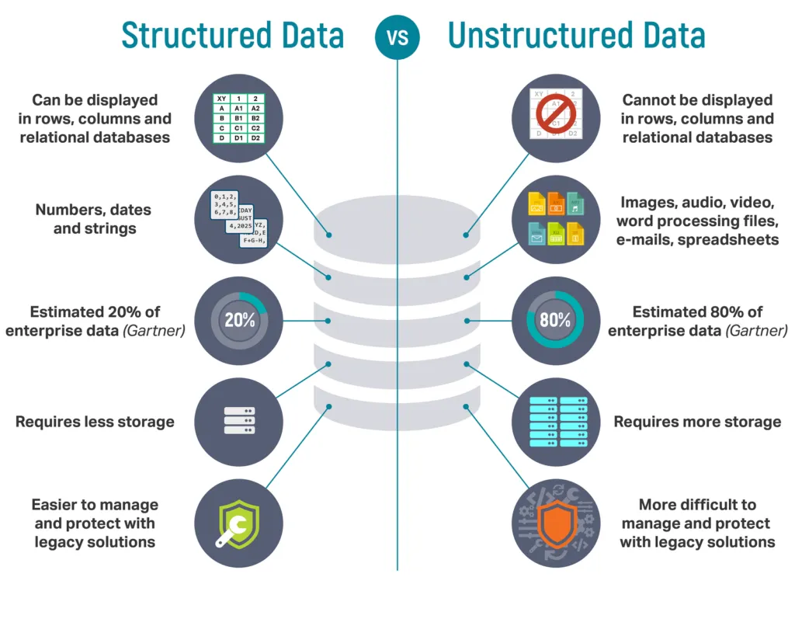
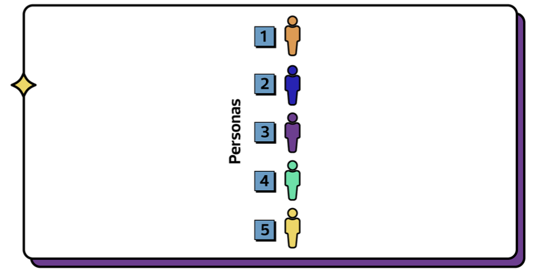
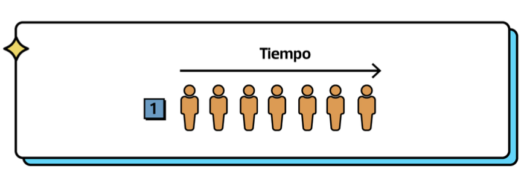
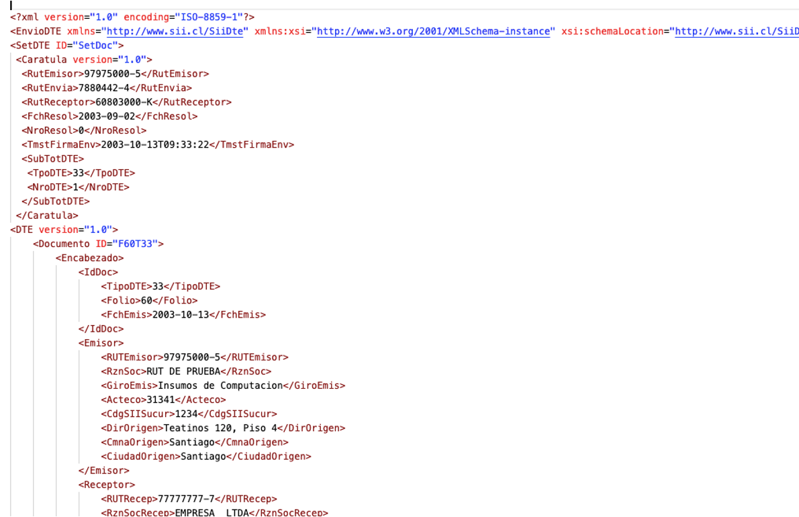
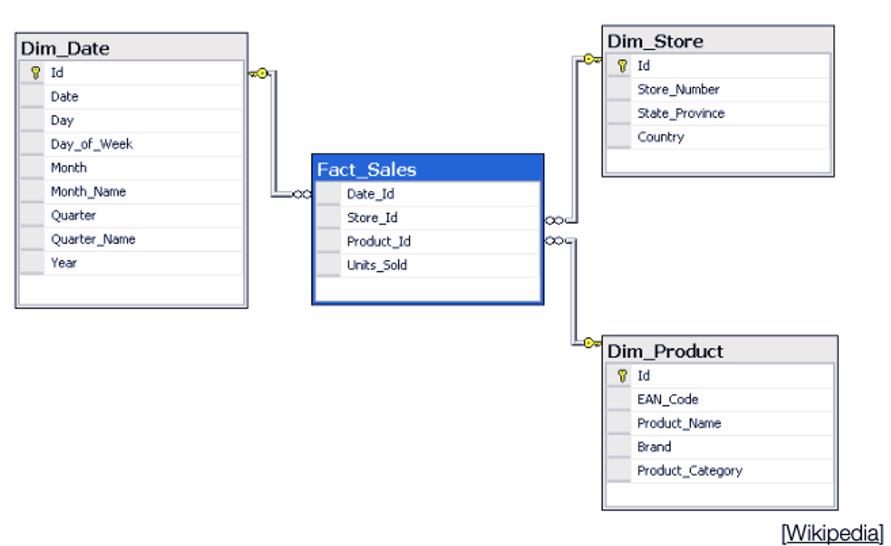
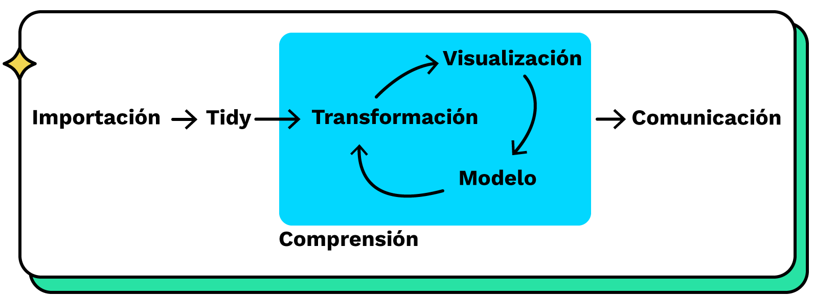
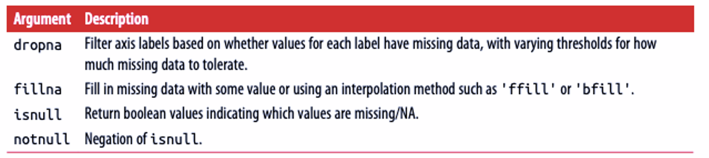
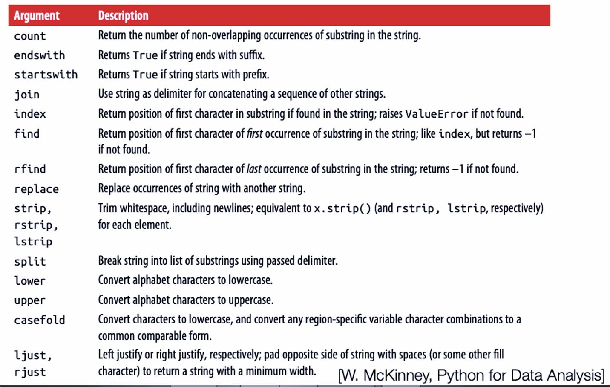
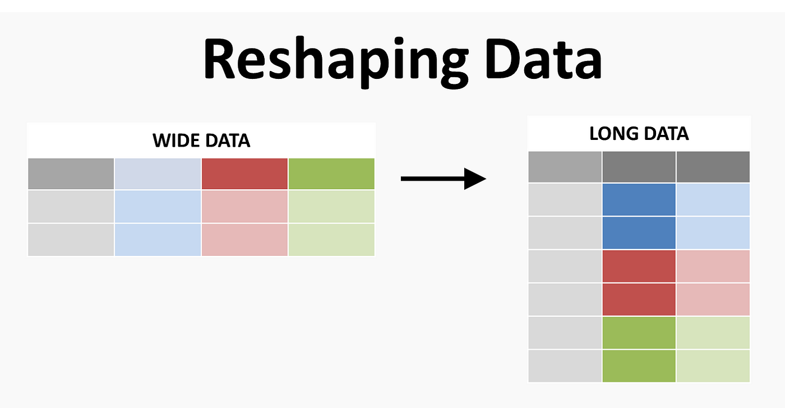
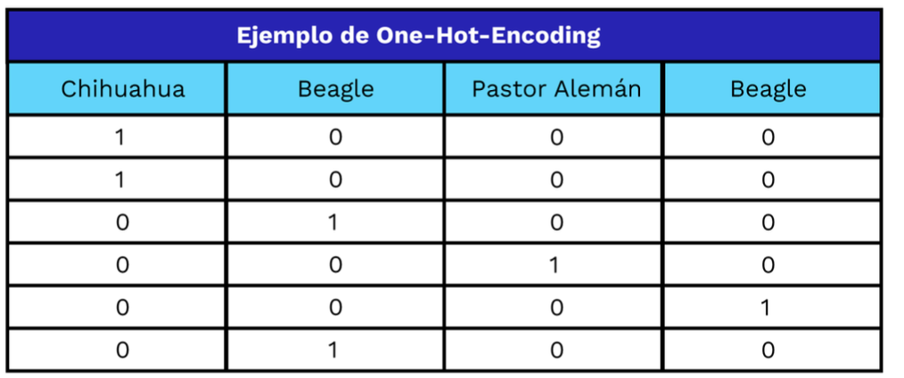

import pickle
# Objeto que queremos guardar
data = {'nombre': 'Juan', 'edad': 25, 'profesion': 'ingeniero'}
# Guardar el objeto en un archivo utilizando pickle
with open('datos.pickle', 'wb') as archivo:
pickle.dump(data, archivo)
# Cargar el objeto desde el archivo utilizando pickle
with open('datos.pickle', 'rb') as archivo:
datos_cargados = pickle.load(archivo)
print("Objeto cargado:", datos_cargados)Sesión 2: Preparando los datos
Curso: Análisis de datos
Slides
La preparación de los datos
La preparación de datos es una fase esencial en el proceso de análisis de datos que involucra una serie de actividades destinadas a garantizar que los datos estén en condiciones óptimas para su posterior análisis.
- Extraccion de los datos
- Limpieza
- Transformación
- Organización
Esta fase implica la extracción de los datos, su limpieza, transformación y organización de manera que sean coherentes, completos y adecuados para el análisis que se va a realizar.
Trash in , trash out
La preparación de datos es crucial porque afecta directamente la calidad y confiabilidad de los resultados obtenidos en cualquier análisis posterior.

Tipos de datos
Antes de adentrarnos en la preparación de los datos propiamente tal, es importante que revisemos los diferentes tipos de datos con los cuales nos podemos encontrar.
En especial, para que trabajemos desde un lenguaje común.
Los tipos de datos y sus estructuras
Podemos clasificar estos datos que recopilamos de muchas maneras, unas posibles agrupaciones son en relación a:
Estructura
Tamaño
Operacionalización
Temporalidad y unidad de análisis.
Según estructura de los datos
- La estructura de un dato se refiere a su formato y codificación.

Datos estructurados
- Tablas son formas organizadas y ordenadas de datos.
- Conjuntos de tablas forman bases de datos estructuradas.
- Las entradas en tablas pueden ser texto o números.
- Los datos estructurados son recopilados y organizados intencionalmente.
Datos No estructurados
- Los datos no estructurados son comunes en la sociedad moderna.
- Pueden ser multimedia, imágenes, audio, datos de sensores, texto, etc.
- No siguen un formato de base de datos definido.
Algunos ejemplos de datos no estructurados son:
Medios enriquecidos: Datos de medios y entretenimiento, datos de vigilancia, datos geoespaciales, audio, datos meteorológicos
Colecciones de documentos digitalizados: Facturas, registros, correos electrónicos, aplicaciones de productividad
Internet de las cosas: Datos de sensores, datos de teletipos.
Estructurados vs no estructuraods
- Datos estructurados están en sistemas transaccionales y bases de datos.
- No hay preferencia entre estructurados y no estructurados.
- Ambos tienen herramientas para acceder a la información, pero los no estructurados son más abundantes.
Datos según tamaño
Big Data: Se refiere a conjuntos de datos extremadamente grandes y complejos que son difíciles de gestionar, procesar y analizar con herramientas y métodos tradicionales. Big Data involucra terabytes o incluso petabytes de información y generalmente requiere tecnologías y enfoques especializados para extraer conocimientos significativos.
Small Data: Se refiere a conjuntos de datos más pequeños y manejables en comparación con Big Data. Estos conjuntos de datos son más accesibles y pueden ser procesados y analizados utilizando herramientas y métodos convencionales. A menudo, Small Data se centra en obtener información valiosa de fuentes limitadas y específicas.
Datos según tipo y su operacionalización
- Las variables en análisis de datos pueden ser cuantitativas o cualitativas.
- Las cuantitativas representan números medibles, como medidas o cantidades.
- Las cualitativas representan cualidades y se subdividen en nominales (sin orden) y ordinales (con orden).
- Para operacionalizar variables cualitativas, asignamos números o factores que representen categorías, facilitando su análisis cuantitativo.
Datos según temporalidad y unidad de análisis.
Otra manera de clasificar los datos con relación a la temporalidad en la cual son tomados y cuál es la unidad de análisis.
- Corte transversal
- serie de tiempo
- panel - datos longitudinales
Corte transversal

Serie temproal

Panel

Cargando los datos
Leyendo datos en Pandas
En Pandas podemos cargar una gran variedad de datos, a través de la familia de funciones read_tipo

Algunos tipos de argumentos para funciones read_*
- Indexing: escoger una columna para indexar los datos, obtener nombres de columnas del archivo o usuario
- Type inference y data conversion: automático o definido por el usuario
- Datetime parsing: puede combinar información de múltiples columnas
- Iterating: trabajar con archivos muy grandes
- Unclean Data: saltarse filas (por ejemplo, comentarios) o trabajar con números con formato (por ejemplo, 1,000,345)
- Memory:
low_memoryindica que usemos pocos recursos (o no) del sistema.
Formato CSV (valores separados por comas)
La coma es un separador de campos, newline denota registros
a,b,c,d,message1,2,3,4,hello5,6,7,8,world9,10,11,12,foo
Puede tener un encabezado (
a,b,c,d,message), pero no es requisitoSin tipo de información: no sabemos qué son las columnas (números, strings, punto flotante, etc.)
- Default: simplemente mantener todo como string
- inferencia del tipo: descubrir qué tipo para transformar cada columna basado en lo que parece ser
¿Y qué pasa con las comas en un valor?: doble comillas
Se puede utilizar otros delimitadores (|, , )
CSV en pandas
- Lectura:
- Básica:
df = pd.read_csv(fname) - Utilizar diferente delimitador:
df = pd.read_csv(fname, sep='\t\') - Saltarse las primeras columnas:
df = pd.read_csv(fname, skiprows=3)
- Básica:
- Escritura:
- Básica
df.to_csv() - Cambiar el delimitador con sep kwarg:
df.to_csv('example.dsv', sep='\|') - Cambiar la representación de missing value
df.to_csv('example.dsv', na_rep='NULL')
- Básica
JSON (Java Script Object Notation)
Un formato para datos web
Aspecto muy similar a a diccionarios y listas python
Ejemplo:
{ "name": "Wes", "places_lived": ["United States", "Spain", "Germany"], "pet": null, "siblings": [{"name": "Scott", "age": 25, "pet": "Zuko"}, {"name": "Katie", "age": 33, "pet": "Cisco"}] }No hay variables sino elementos independientes, pero permite nulos Valores: strings, arreglos, diccionarios, números, booleanos, o nulos
- Keys de diccionario deben ser strings
- Signos de pregunta ayudan a diferenciar string o valores numéricos
Lectura y escritura de JSON con pandas
pd.read_json(<filename>, orient=<orientation>)df.to_json(<filename>, orient=<orientation>)
Orientaciones posibles de JSON
- split: tipo diccionario
{index -> [index], columns -> [columns],data -> [values]} - records: tipo lista
[{column -> value}, ... , {column -> value}] - index: tipo diccionario
{index -> {column -> value}} - columns: tipo diccionario
{column -> {index -> value}} - values: solo los valores del arreglo
eXtensible Markup Language (XML)
- Formato más antiguo y auto descriptivo, con estructura jerárquica anidada.
- Cada campo tiene tags
- Tiene un elemento inicial llamado root
- No tiene un método incorporado en Python.
- Se puede usar la librería
lxml(también ElementTree)
Ejemplo XML

Formatos binarios
CSV, JSON y XML son todos formatos de texto
¿Qué es un formato binario?
Pickle: Python’s built-in serialization
HDF5: Librería para almacenar gran cantidad de datos científicos
Formato jerárquico de datos
Interfaces in C, Java, MATLAB, etc.
Aguanta compresión
Usar pd.HDFStore para acceder
Comandos: read_hdf/to_hdf, se necesita especificar objeto
Excel: se necesita especificar la hoja cuando la hoja de cálculo tiene múltiples hojas
pd.ExcelFile or pd.read_excel
Bases de datos relacionales

Las bases de datos relacionales son similares a los marcos de datos múltiples pero tienen muchas más características
vínculos entre tablas via foreign keys
SQL para crear, almacenar y query datos
sqlite3 es una base de datos simple con built-in support in python
Python tiene una database API que te permite acceder a la mayoría de los sistemas de bases de datos a través de un API común
Sintaxis similar (¡pero no igual!) de otros sistemas de bases de datos (MySQL, Microsoft SQL Server, Oracle, etc.)
SQLAlchemy: Paquete de python que se abstrae de las diferencias entre distintos sistemas de bases de datos
SQLAlchemy apoya la lectura de queries a data frame:
`import sqlalchemy as sqla
db = sqla.create_engine(‘sqlite:///mydata.sqlite’)
pd.read_sql(‘select * from test’, db)`
Dirty Data
… pero, ¿y si los datos no son o están correctos/confiables/en formato correcto?
Dirty data: punto de vista estadístico
- Los datos son generados desde algún proceso
- Se quiere modelar el proceso, pero se tienen muestras no ideales:
- Distorsión: algunas muestras se corrompieron por un proceso
- Sesgo de selección: probabilidad de que una muestra dependa de su valor
- Censura de izquierda y derecha: Left and right censorship: los usuarios van y vienen del escrutinio
- Dependiencia: las muestras no son independientes (por ejemplo, redes sociales)
- Puedes agregar/aumentar modelos para diferentes problemas, pero no modelar todo
- Trade-off entre precisión y simplicidad
Dirty data: punto de vista experto en base de datos
- Se obtuvo un set de datos
- Algunos valores están missing, corrompidos, erróneos, duplicados
- Los resultados son absolutos (modelo relacional)
- Mejores respuestas provienen de mejorar la calidad de los valores en el set de datos
Dirty Data: Punto de vista del experto en un área
- Algo se ve mal en los datos
- Algo se ve mal en la respuesta
- ¿Qué ocurrió?
- Los expertos en un área llevan un modelo implícito de los datos que están testeando
- No siempre necesitas ser un experto en un área para hacer esto
- ¿Puede una persona correr 500 km por hora?
- ¿Puede una montaña en la Tierra estar a 50.000 metros sobre el nivel del mar?
- Utilizar sentido común
Dirty Data: Punto de vista del Data Scientist
- Combinación de los tres puntos de vista anteriores
- Todos los puntos de vista presentan problemas con los datos La meta puede determinar las soluciones:
- Valor de la mediana: no preocuparse mucho de los outliers muy improbables
- Generalmente, agregación es menos susceptible a los errores numéricos
- Ser cuidadoso, puede que los datos estén bien…
¿Dónde se origina el dirty data?
- La fuente está mal, por ejemplo, una persona la ingresó de forma incorrecta
- Las transformaciones corrompen los datos, por ejemplo, ciertos valores fueron procesados de forma incorrecta debido a un software bug
- La integración de diferentes sets de datos causa problemas
- Propagación del error: se magnifica un error
Problemas Dirty comunes:
- Problemas de separadores: por ejemplo, CSV sin respetar comillas dobles
- Convenciones de nombres o denominaciones: NYC vs. New York
- Pérdida de campos requeridos, por ejemplo, key
- Representaciones diferentes: 2 vs. dos
- Datos truncados: “Janice Keihanaikukauakahihuliheekahaunaele” se vuelve “Janice - Keihanaikukauakahihuliheek” en la licencia de Hawaii
- Registros redundantes: pueden ser exactamente el mismo o tener alguna superposición
- Problemas de formato: 2017-11-07 vs. 07/11/2017 vs. 11/07/2017
Preparando los datos
Muchas veces los datos con los que queremos trabajar no están en el formato adecuado para los análisis que querenos realizar.
Data Wrangling
- Data wrangling: transformar datos en bruto a un formato más significativo que pueda ser analizado mejor
- Data cleaning: deshacerse de datos imprecisos
- Data transformations: cambiar los datos de una representación a otra
- Data reshaping: reorganizar los datos
- Data merging: combinar dos sets de datos
Tidy Data
En este sentido, generalmente para análisis de corte transversal nuestro ideal es trabajar con Tidy Data
“Tidy Data is a standar way of mapping the meaning of a dataset to its structure¨
Un tipo de estructura de datos útil para poder realizar modelos y análisis, son los llamados datos ordenados o Tidy Data Propuesto por Hadley Wickham (2014), se ha vuelto un estándar deseable para analizar datos.
Se caracteriza por que los datos son representados en tablas rectangulares, de tal manera que:
Cada variable (feature) forma una columna.
Cada observación (registro) forma una fila.
Cada dato (valor) está en una celda de la tabla.

Con Tidy data podemos tener una estandarización en el tratamiento de los datos:

Muchas veces un flujo de trabajo workflow empieza limpiando y ordenando los datos con el objetivo de que sean Tidy, para luego ser analizados y finalmente, comunicados sus resultados.

¿Porqué datos Tidy?
- Estandarizanción
Los datos organizados te permiten ser más eficiente al utilizar herramientas existentes diseñadas específicamente para realizar las tareas que necesitas hacer, desde la selección de porciones de tus datos hasta la creación de mapas de tu área de estudio.
Utilizar herramientas existentes te ahorra tener que construir todo desde cero cada vez que trabajas con un nuevo conjunto de datos (lo cual puede ser consume tiempo y desmotivante).
Afortunadamente, existen muchas herramientas diseñadas específicamente para transformar datos desorganizados en datos organizados (por ejemplo, en el paquete tidyr). Al estar mejor preparado para transformar tus datos en un formato organizado, podrás llegar más rápido a tus análisis y comenzar a responder las preguntas que estás planteando.

- Facilitar la colaboración
Dado que nuestros colegas pueden emplear las mismas herramientas de manera familiar. Tanto si consideramos a los colaboradores como compañeros actuales, su futuro propio o futuros colegas, la organización y compartición de datos de manera coherente y predecible implica menos ajustes, tiempo y esfuerzo para todos.

- Simplifica la reproducibilidad
Los datos organizados también facilitan la reproducción de análisis, ya que son más fáciles de comprender, actualizar y reutilizar. Al utilizar herramientas que esperan datos organizados como entrada, puedes construir e iterar flujos de trabajo realmente potentes. Y cuando tienes entradas de datos adicionales, ¡no hay problema en volver a ejecutar tu código!

¿Siempre Tidy?
NO!
Existen muchos otros tipos de estructuras de datos que no son tidy y que eso no hace que no sean útiles o “desordenadas”.
Es importante tener en cuenta que siempre existen múltiples formas de representar la misma información.
Existen dos principales motivos para utilizar otras estructuras de datos:
- Representaciones alternativas que tengan mucho mayor desempeño computacional o ventajas en uso de memoria. Especialmente importante al tratar con grandes datos.
- Algunos campos de estudio especializados tienen sus propias convenciones, que pueden ser diferentes a estas, por ejemplo las series temporales.
Tareas comunes en Data Cleaning
- Descartar e imputar missing data
- Remover duplicados.
- Modificar datos
- mapear strings, expresiones aritméticas. Ejemplos:
- Convertir strings de mayúsculas a minúsculas (upper/lower case)
- Convertir T en Fahrenheit a Celsius
- Crear una nueva columna basada en la columna anterior.
- mapear strings, expresiones aritméticas. Ejemplos:
- Reemplazar valores
- (e.g. -999 → NaN). Usar método df[‘column’].replace()
- Restringir valores:
- valores por encima o por debajo de los umbrales especificados se establecen en un valor máximo/mínimo.
import pandas as pd
import numpy as np
data = {'Nombre': ['Juan', 'Ana', 'Luis', np.nan, 'Carlos'],
'Edad': [25, 30, np.nan, 30, 28]}
df = pd.DataFrame(data)
# Eliminar filas con valores faltantes
df = df.dropna()
# Llenar valores faltantes con un valor específico
df['Edad'].fillna(0, inplace=True)
print(df)Datos perdidos
2 enfoques para lidiar con ellos:
- Filtrar
- se pueden escoger filas o columnas
- Llenar/ reemplazar :
- con un valor por default
- con un valor interpolados, otros

Fitrando y limpiando
- Encontrar duplicados
duplicated: retorna una Series booleana , indicando si la fila es un duplicado o no la primera instancia no es marcada como un duplicado.
- Remover duplicados:
drop_duplicates: saca todas las filas donde duplicated es Truekeep: Cuál de los valores es el que quiero mantener (first or last)
- Puede recibir columnas específics para chequear por duplicados, e.g. chequear solo la columna key.
import pandas as pd
data = {'Nombre': ['Juan', 'Ana', 'Luis', 'Ana', 'Carlos'],
'Edad': [25, 30, 35, 30, 28]}
df = pd.DataFrame(data)
df = df.drop_duplicates()
print(df)Errores de registro y textos
Uno de los errores de registro más típico, tiene que ver con que los textos/strings estan ingresados con errores.
Una de las razones de la popularidad de Python es por su capacidad de procesar texto/strings.
split(<delimiter>)“quiebra” o separa un string en partes:s = "12,13,14"slist = s.split(',') # ["12", "13", " 14"]<delimiter>.join([<str>]): Une varios strings por un delimitador":".join(slist) # "12:13: 14”strip(): remueve los espacios en blanco iniciales y finales
[p.strip() for p in slist] # ["12", "13", "14"]replace(<from>,<to>): Cambia un substring por otros.replace(',', ':') # "12:13: 14”upper()/lower(): casing
"AbCd".upper () # "ABCD”"AbCd".lower() # "abcd"
Errores de formato
A veces, los datos se almacenan en el formato incorrecto y necesitas corregirlos.
import pandas as pd
data = {'Fecha': ['2023-08-26', '2023-08-27', '2023-08-28'],
'Ventas': ['$1000', '$1500', '$1200']}
df = pd.DataFrame(data)
# Convertir la columna 'Ventas' a números eliminando el símbolo de dólar
df['Ventas'] = df['Ventas'].str.replace('$', '').astype(float)
print(df)Transformando strings
- index()encuentra donde ocurre primero un substring(error si no lo encuentra):
s = "12,13, 14"
s.index(',') # 2#s.index(':') # ValueError raisedfind(<str>): Lo mismo que index pero -1 si no es encontrado
s = "12,13, 14"
s.find(',') # 2s.find(':') # -1startswith()orendswith(): chequeo booleano para la ocurrencia de un string
s.startswith("1") # True
s.endswith("5") # False`Métodos para strings


Cualquier columna o serie puede tener métodos string (e.g. replace, split) aplicado a la serie completa
Está vectorizado para columnas completas o incluso el dataframe (lo cual lo hace rápido) Se debe usar .str.
Ejemplo:
import pandas as pd
import numpy as np
data = pd.Series({'Dave': 'dave@google.com', 'Steve': 'steve@gmail.com', 'Rob': 'rob@gmail.com', 'Wes': np.nan})
contains_gmail = data.str.contains('gmail')
split_at = data.str.split('@').str[1]
last_three_chars = data.str[-3:]
print("Contains 'gmail':")
print(contains_gmail)
print("\nSplit at '@', second part:")
print(split_at)
print("\nLast three characters:")
print(last_three_chars)Transformaciones del formato de los datos
- Reshapes
- Eliminar/elegir columnas
- Re codificar: variables dummies
- Unir datasets
Eliminar/ elegir columnas
A veces, queremos deshacernos de columnas que no son relevantes para nuestro análisis.
import pandas as pd
data = {'Nombre': ['Juan', 'Ana', 'Luis', 'Carlos'],
'Edad': [25, 30, 35, 28],
'Peso (kg)': [70, 65, 80, 75]}
df = pd.DataFrame(data)
# Eliminar la columna 'Peso (kg)'
df = df.drop(columns=['Peso (kg)'])
print(df)Reshapes/re formato
- El “reshape” o remodelado de datos se refiere al proceso de reorganizar la estructura de un conjunto de datos, cambiando su disposición de filas y columnas para adaptarse a un formato específico.
- Esto puede implicar la transformación de datos de un formato largo (tall) a uno ancho (wide) o viceversa, con el fin de facilitar el análisis, la visualización o la aplicación de modelos estadísticos.
- El “reshape” es comúnmente realizado en la manipulación de datos utilizando bibliotecas como Pandas en Python o funciones de pivote en hojas de cálculo.

import pandas as pd
# Crear DataFrame de ejemplo en formato largo
data = {'Fecha': ['2023-08-01', '2023-08-01', '2023-08-02', '2023-08-02'],
'Ciudad': ['A', 'B', 'A', 'B'],
'Temperatura': [25, 28, 26, 29]}
df_largo = pd.DataFrame(data)
# Realizar el reshape de largo a ancho usando pivot()
df_ancho = df_largo.pivot(index='Fecha', columns='Ciudad', values='Temperatura')
print("DataFrame en formato largo:")
print(df_largo)
print("\nDataFrame en formato ancho:")
print(df_ancho)Crear variables dummies / dicotómicas
- Muy útil para representar información cualitativa.
- Muy usando en análisis de regresión y machine learning.
- Queremos tomar valores posibles y mapearlos a uno o más indicadores que toman valor 0 ó 1.
- Se pueden generar mediante
pd.get_dummies(df[‘key’])

import pandas as pd
# Lista de razas de perros
razas = ['Labrador', 'Poodle', 'Bulldog', 'Golden Retriever', 'Chihuahua', 'Husky']
# Crear un DataFrame con la lista de razas
df = pd.DataFrame({'Raza': razas})
# Razas que queremos crear como variables dicotómicas
razas_interes = ['Labrador', 'Poodle', 'Bulldog']
# Crear variables dicotómicas para las razas de interés
for raza in razas_interes:
df[raza] = df['Raza'].apply(lambda x: 1 if x == raza else 0)
# Eliminar la columna original de 'Raza'
df.drop(columns=['Raza'], inplace=True)
print(df)Unir datasets
Muchas veces tenemos varios dataset que queremos unir. Existen dos métodos principales:
Apliar/concatenar/append Consiste en agregar un dataset a continuación de otro, para esto tienen que tener la misma forma.
Uniones Merge / Join Las uniones combinan DataFrames utilizando columnas en común como clave. Puedes realizar diferentes tipos de uniones, como “inner”, “outer”, “left” y “right”

1. Apilar dataframes
Creemos los dataframes:
df = pd.DataFrame([[2, 3], [4, 5]], columns=list('PQ'))
print(df)
df2 = pd.DataFrame([[6, 7], [8, 9]], columns=list('PQ'))
print(df2)Hagamos el apilar. Atención a los index
df.append(df2)
Usemos ignorar index
df.append(df2, ignore_index=True)
2. Unir dataframes
Utilizando la función pd.merge().
# Crear dos DataFrames con columnas en común
df3 = pd.DataFrame({'Key': ['A', 'B', 'C'], 'Value': [1, 2, 3]})
df4 = pd.DataFrame({'Key': ['B', 'C', 'D'], 'Value': [4, 5, 6]})
# Unión interna basada en la columna 'Key'
inner_join = pd.merge(df3, df4, on='Key', how='inner')
# Unión externa basada en la columna 'Key'
outer_join = pd.merge(df3, df4, on='Key', how='outer')
print("Unión interna:")
print(inner_join)
print("\nUnión externa:")
print(outer_join)Transformaciones estadístocas:
- Outliers
Un valor atípico, también conocido como valor outlier en inglés, es un punto de datos que difiere significativamente del patrón general de los demás datos en un conjunto. Estos valores son inusuales en relación con el resto de la distribución de los datos y pueden ser considerablemente más altos o más bajos que los valores típicos del conjunto.
La identificación de valores atípicos es importante por varias razones: 1. Calidad de los datos 2. Impacto en estadísticas y modelos 3. Anomalías y problemas reales 4. Toma de decisiones informada
Veamos un ejemplo:
import pandas as pd
import numpy as np
# Crear un conjunto de datos con valores atípicos
data = [10, 15, 20, 25, 30, 35, 200, 40, 45, 50]
# Crear un DataFrame
df = pd.DataFrame({'Valor': data})
# Calcular el rango intercuartílico (IQR)
Q1 = df['Valor'].quantile(0.25)
Q3 = df['Valor'].quantile(0.75)
IQR = Q3 - Q1
# Definir los límites para identificar valores atípicos
lower_limit = Q1 - 1.5 * IQR
upper_limit = Q3 + 1.5 * IQR
# Identificar valores atípicos
outliers = df[(df['Valor'] < lower_limit) | (df['Valor'] > upper_limit)]
print("Valores atípicos:")
print(outliers)2. Estandarización de Datos
La estandarización es un proceso importante en el análisis de datos y el aprendizaje automático. Consiste en transformar los valores de una variable de manera que tengan una media de cero y una desviación estándar de uno. Esta transformación se logra mediante la fórmula:
Donde $ x $ es el valor original, $ $ es la media de los valores y $ $ es la desviación estándar.
La estandarización es especialmente útil cuando se tienen variables con diferentes escalas y distribuciones, ya que permite compararlas de manera equitativa y mejorar la eficacia de los algoritmos de aprendizaje automático al mitigar el impacto de las diferencias en las magnitudes de las características.
import pandas as pd
# Crear un DataFrame con datos
data = {'Valor': [10, 15, 20, 25, 30, 35, 40, 45, 50]}
df = pd.DataFrame(data)
# Calcular la media y la desviación estándar
mean = df['Valor'].mean()
std_dev = df['Valor'].std()
# Estandarización de los datos utilizando Pandas
df['Valor_estandarizado'] = (df['Valor'] - mean) / std_dev
print(df)import numpy as np
# Datos originales
data = [10, 15, 20, 25, 30, 35, 40, 45, 50]
# Calcular la media y la desviación estándar
mean = np.mean(data)
std_dev = np.std(data)
# Estandarización de los datos
standardized_data = [(x - mean) / std_dev for x in data]
print("Datos originales:", data)
print("Datos estandarizados:", standardized_data)Normalización de Datos
La normalización es un proceso esencial en el análisis de datos y el aprendizaje automático. Consiste en ajustar los valores de una variable para que se encuentren dentro de un rango específico, generalmente entre 0 y 1. La fórmula matemática utilizada para la normalización es:
Donde $ x $ es el valor original y $x_{} $ es el valor normalizado.
La normalización es beneficiosa para igualar la escala de las variables y mejorar el rendimiento de los modelos que son sensibles a la magnitud de las características.
import pandas as pd
# Crear un DataFrame con datos
data = {'Valor': [10, 15, 20, 25, 30, 35, 40, 45, 50]}
df = pd.DataFrame(data)
# Calcular los valores mínimo y máximo
min_value = df['Valor'].min()
max_value = df['Valor'].max()
# Aplicar la normalización min-max
df['Valor_normalizado'] = (df['Valor'] - min_value) / (max_value - min_value)
print(df)import numpy as np
# Datos originales
data = np.array([10, 15, 20, 25, 30, 35, 40, 45, 50])
# Calcular los valores mínimo y máximo
min_value = np.min(data)
max_value = np.max(data)
# Aplicar la normalización min-max utilizando NumPy
normalized_data = (data - min_value) / (max_value - min_value)
print("Datos originales:", data)
print("Datos normalizados:", normalized_data)